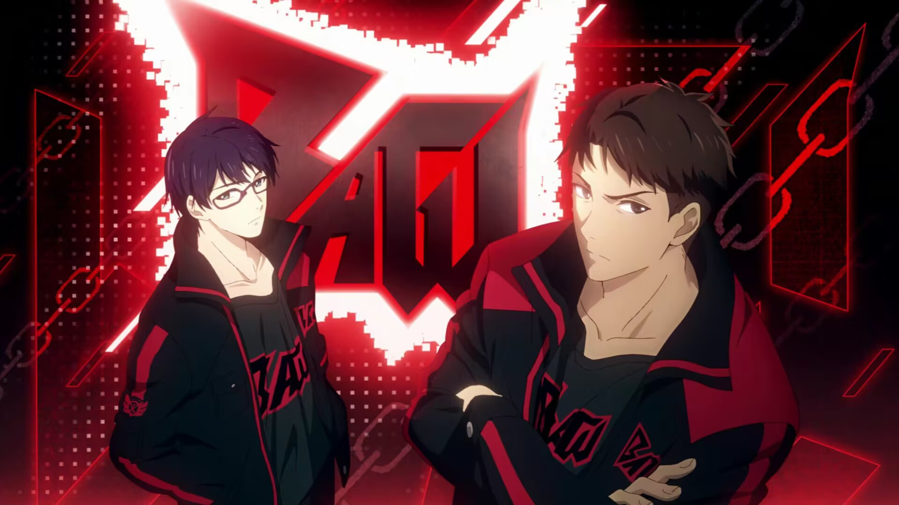

霸图战队

中文名：霸图战队
登场作品：《全职高手》
队长：韩文清
副队长： 林敬言、张佳乐
成就： 第四赛季总冠军
霸图战队的战斗风格起初是与队长韩文清相似的勇往直前不知后退的强硬风格，直到第十赛季中，由于队长韩文清等老将状态下滑，在张新杰建议下采用轮换战术，转换为更类似于副队长张新杰严谨细致而又不失霸气的风格，战队重心开始渐渐向副队长张新杰转移。
战队成员
队长：韩文清(拳法家，大漠孤烟)
第一至第三赛季均败给叶修带领的嘉世战队，第四赛季终于带领霸图战队夺得冠军，之后一直在四强徘徊，第九赛季亚军，第十赛季前四强。
首届世界荣耀邀请赛，因放不下霸图而拒绝了国家队的邀请。
副队长：张新杰(牧师，石不转)
第四赛季霸图战队因其加入一举结束了“嘉世王朝”，赢得总冠军。第九赛季亚军，第十赛季前四强。首届世界荣耀邀请赛应邀成为国家队队员，队服为10号。
队员：白言飞(元素法师，罗塔)
队员：林敬言(流氓，冷暗雷){原角色唐三打，原呼啸队长}
队员：秦牧云(神枪手，零下九度)
队员：宋奇英(拳法家，长河落日)
队员：张佳乐(弹药专家，百花缭乱){原百花队长，退役后复出霸图，角色百花缭乱被霸图购入} 曾自创“百花式打法”，并与百花队长孙哲平共创繁花血景打法，并因此称为“双花”，在孙哲平因伤退役后接任百花队长(第五赛季~第七赛季)。荣获第五赛季最有价值选手(MVP)，并带领百花战队夺得第三、五、七赛季亚军，一度突然宣布退役。复出后加入霸图战队，于第九赛季夺得亚军。后参加国家队，队服为9号。
队员：郑乘风(骑士，山逢地裂) 仅在网游中被间接提到过，原文描述：在霸图也算是一线选手，经常出现在轮换阵容当中。
队员：季冷(刺客，季冷){已退役}
队员：李艺博 (?){第四赛季拿到冠军后退役，之后做电视台嘉宾}
队员：于天(剑客，?)
队员：王池轩(神枪手，第九赛季夏季转会时离开，去向不明)